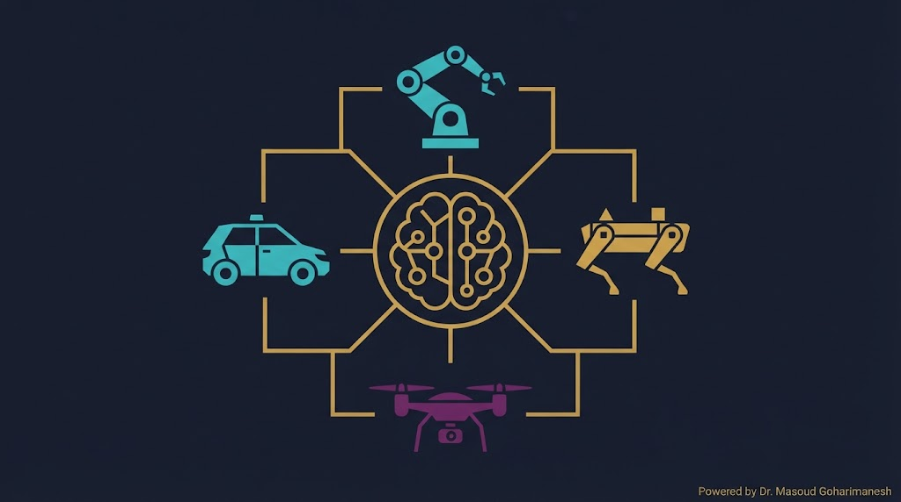
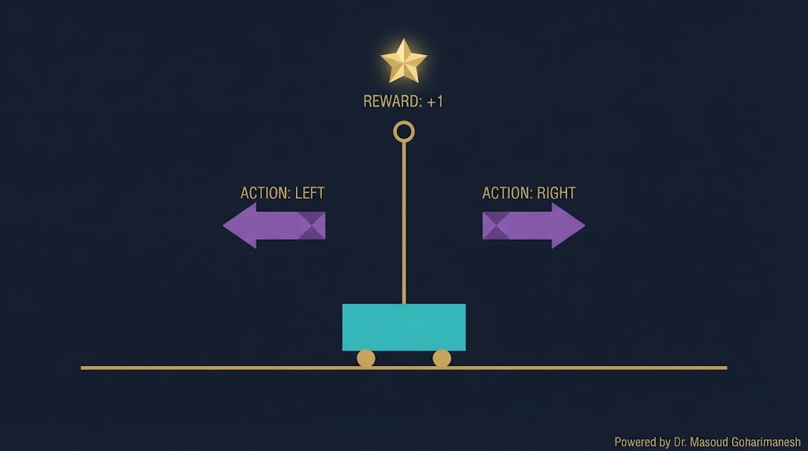
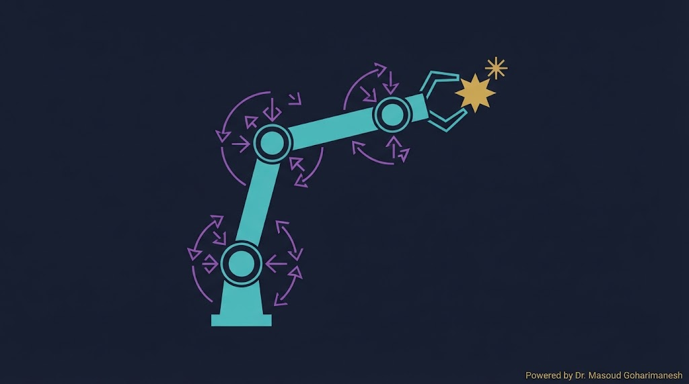
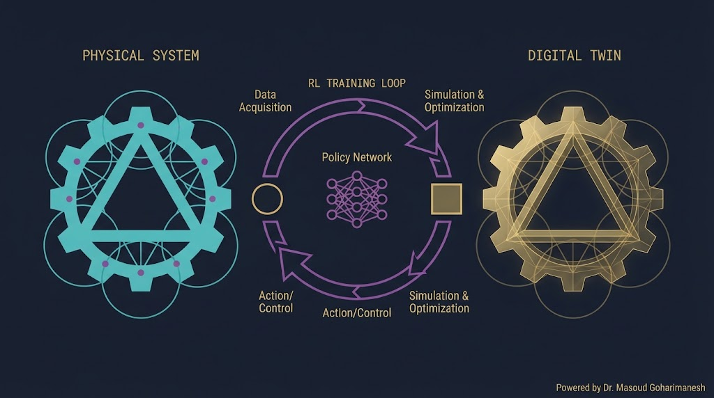
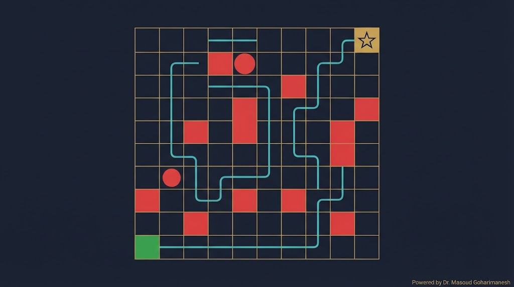
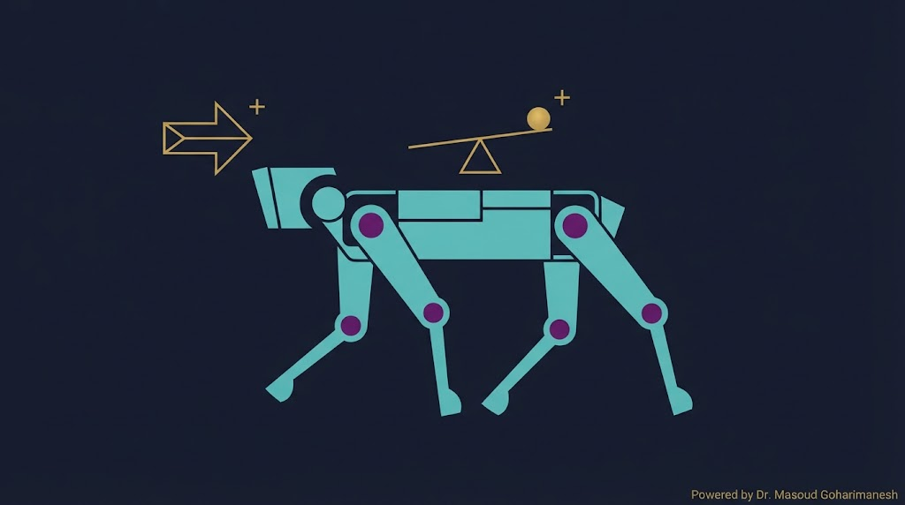
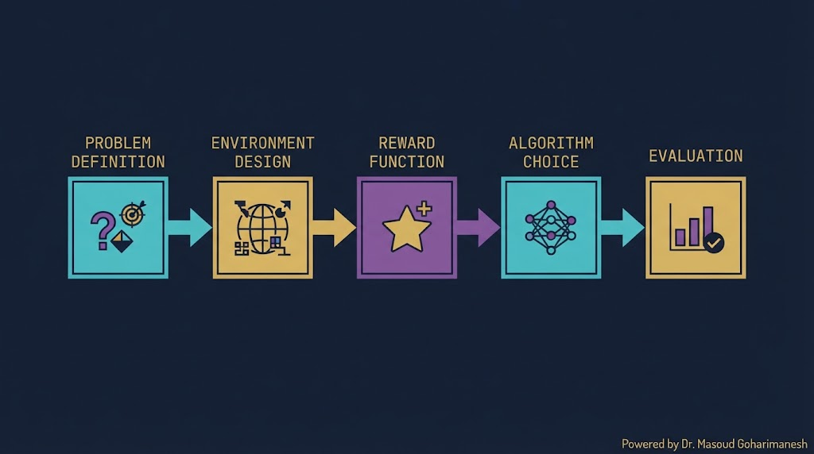
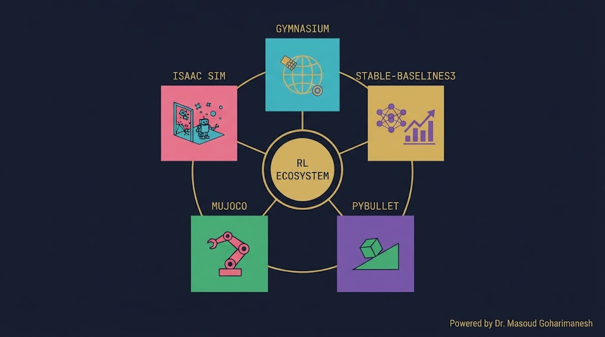

جلسه ۱۶ — RL در مکانیک
جلسه ۱۶ — RL در مکانیک
جلسه ۱۶ — RL در مکانیک
جلسه ۱۶ — RL در مکانیک
 ستاره این جلسه
به یاد شهدای والامقام
ستاره این جلسه
به یاد شهدای والامقامReinforcement Learning in Mechanical Engineering
From Simulation to Real-World Control
Policy Gradient، PPO
RL در مکانیک — پروژههای واقعی
✅ آونگ معکوس با RL
✅ بازوی رباتیک — کنترل پیوسته
✅ Digital Twin + RL
✅ برنامهریزی مسیر
✅ ساختار پروژه RL
✅ ابزارها: SB3، PyBullet، MuJoCo
مهندسی مکانیک در قلب مسائل کنترلی است — و RL رویکرد جدیدی برای کنترل ارائه میدهد که در برخی موارد از کنترل کلاسیک (PID، MPC) بهتر عمل میکند. چرا؟ چون RL میتواند در محیطهای پیچیده، غیرخطی، و نویزی سیاستی یاد بگیرد که هیچ کنترلر کلاسیکی نمیتواند.

PID برای سیستمهای خطی خوب است — RL برای هر چیزی
استاندارد Boston Dynamics و Tesla
آموزش در شبیهسازی، اجرا در واقعیت
یافتن مسیر و سیاست بهینه
کنترل کلاسیک — CartPole
کنترل پیوسته ۳-مفصلی
شبیهسازی + RL
Path Planning
یک چوب روی ارابه قرار دارد. هدف: با اعمال نیروی چپ/راست به ارابه، چوب را ایستاده نگه داریم. مسئله کلاسیک کنترل — اما با RL میتوان آن را بدون معادلات فیزیکی حل کرد.

مکان ارابه، سرعت، زاویه چوب، سرعت زاویه
نیروی چپ یا راست به ارابه
+۱ برای هر گام که چوب ایستاده بماند
بیشترین زمان ایستادن
یک کنترلر RL را روی CartPole اجرا کنید و ببینید چطور چوب را ایستاده نگه میدارد.
یک بازوی رباتیک ۳-مفصلی را با RL آموزش دهید تا به هدف برسد. اینجا برخلاف CartPole، اعمال پیوسته هستند — DQN کار نمیکند، باید از PPO یا SAC استفاده کنیم.

زاویه هر مفصل (۳ بعد)
گشتاور هر مفصل (پیوسته)
منفی فاصله تا هدف
PPO، SAC، DDPG
Digital Twin نسخهی مجازی یک سیستم فیزیکی است. RL در Digital Twin آموزش میبیند و سپس به سیستم واقعی منتقل میشود — بدون خطر خرابی یا هزینه.

بدون خطر، بدون هزینه، هزاران برابر سریعتر
Sim-to-Real Gap — تفاوت شبیهسازی و واقعیت
Domain Randomization — تصادفی کردن پارامترها
یک ربات باید از نقطه شروع به هدف برسد، بدون برخورد با موانع. RL میتواند بهینهترین مسیر را خودش یاد بگیرد.

موقعیت ربات (x, y)
بالا، پایین، چپ، راست
+۱۰ هدف، -۱ برخورد، -۰.۱ هر گام
یک ربات را در محیط با موانع آموزش دهید تا به هدف برسد.

Boston Dynamics با ترکیب RL و کنترل کلاسیک، رباتهایی ساخت که میتوانند بدوند، بپرند، و از پله بالا بروند. این پیچیدهترین کاربرد RL در مکانیک است.
۱۲ زاویه مفصل + سرعتها + IMU
۱۲ گشتاور مفصل
پیشرفت + تعادل + صرفهجویی انرژی
PPO + Curriculum Learning
مدل آموزشدیده در شبیهسازی، در واقعیت کار نمیکند
راهحل: Domain Randomization
RL ممکن است در محیط واقعی رفتار خطرناک انجام دهد
راهحل: Safe RL، محدودیتهای ایمنی
آموزش RL نیاز به میلیونها تجربه دارد
راهحل: Model-Based RL، شبیهسازی
چرا RL این تصمیم را گرفت؟
راهحل: تحلیل سیاست، Explainable RL
الگوریتم را انتخاب کنید و ببینید برای کدام مسئله مناسب است.

State، Action، Reward
Gymnasium Environment
Reward Shaping
PPO، SAC، DQN
Test، Sim-to-Real
| محیط | مسئله | سطح |
|---|---|---|
| CartPole | آونگ معکوس | مقدماتی |
| MountainCar | ماشین در شیب | مقدماتی |
| Pendulum | آونگ ساده | مقدماتی |
| Acrobot | ربات دوقطبی | متوسط |
| LunarLander | فرود فضاپیما | متوسط |
| BipedalWalker | راهرفتن دوپا | پیشرفته |
| Reacher | بازوی رباتیک | پیشرفته |

محیطهای استاندارد RL
الگوریتمهای آماده (PPO، SAC، DQN)
شبیهسازی فیزیکی (رایگان)
شبیهسازی فیزیکی (استاندارد)
شبیهسازی NVIDIA (پیشرفته)
RL توزیعشده
import gymnasium as gym from stable_baselines3 import PPO # ساخت محیط env = gym.make('CartPole-v1') # مدل PPO model = PPO( 'MlpPolicy', env, learning_rate=3e-4, n_steps=2048, batch_size=64, n_epochs=10, gamma=0.99, verbose=1 ) # آموزش model.learn(total_timesteps=100000) # ذخیره model.save('ppo_cartpole') # ارزیابی env_eval = gym.make('CartPole-v1', render_mode='human') obs, _ = env_eval.reset() total_reward = 0 for _ in range(500): action, _ = model.predict(obs) obs, reward, done, truncated, _ = env_eval.step(action) total_reward += reward if done or truncated: break print(f"Total reward: {total_reward}")
import gymnasium as gym from gymnasium import spaces import numpy as np class GridWorldEnv(gym.Env): def __init__(self, size=10): super().__init__() self.size = size self.action_space = spaces.Discrete(4) # up,down,left,right self.observation_space = spaces.Box( low=0, high=size-1, shape=(2,), dtype=np.int32) self.obstacles = [(2,2), (2,3), (4,5), (6,7)] self.goal = (size-1, size-1) def reset(self, seed=None, options=None): self.pos = [0, 0] return np.array(self.pos, dtype=np.int32), {} def step(self, action): dx, dy = [0,0,-1,1][action], [-1,1,0,0][action] new_x = max(0, min(self.size-1, self.pos[0] + dx)) new_y = max(0, min(self.size-1, self.pos[1] + dy)) if (new_x, new_y) in self.obstacles: reward = -1.0 # penalty for collision else: self.pos = [new_x, new_y] reward = -0.1 # step penalty if (new_x, new_y) == self.goal: reward = 10.0 # reached goal done = (new_x, new_y) == self.goal return np.array(self.pos, dtype=np.int32), reward, done, False, {}
[AI] HW16 - نام - شماره دانشجویی به arcslab.uth@gmail.com
جستوجوی پروژههای RL مکانیکی
جلسه ۱۶ — اصلیتحلیل کد RL
پشتیبانتولید کد محیط سفارشی
پیشنهادیدر Perplexity جستوجو کنید: «RL for robot control 2024» و ۳ مقاله معتبر پیدا کنید.
آونگ معکوس — شروع کلاسیک
PPO/SAC برای فضای پیوسته
Sim-to-Real با Domain Randomization
محیط سفارشی + DQN/PPO
SB3، PyBullet، MuJoCo، Gymnasium
| # | عنوان | سطح |
|---|---|---|
| ۱ | CartPole با PPO — گزارش مقایسهای | مقدماتی |
| ۲ | Pendulum با SAC | مقدماتی |
| ۳ | LunarLander با DQN | متوسط |
| ۴ | محیط سفارشی مکانیکی + PPO | متوسط |
| ۵ | BipedalWalker با SAC | پیشرفته |
| ۶ | بازوی رباتیک ۲-مفصلی (Reacher) | پیشرفته |
| ۷ | کنترل معکوس آونگ با DDPG | پیشرفته |
| ۸ | مسیریابی ربات با موانع متحرک | متوسط |
| ۹ | Digital Twin ساده + PPO | پژوهشی |
| ۱۰ | کنترل یک سیستم مکانیکی واقعی (مثلاً آونگ ساده) | پژوهشی |
Next Session: NLP & Transformer — Beginning of Phase 5
• NLP — مقدمه
• Tokenization، Embedding
• Attention Mechanism
• Transformer Architecture
• BERT و GPT